Summarize Operations
Overview of the Summarize Process
A summarize operation takes data from a table or set, condenses it using addition, subtraction, or some other operation, and inserts it into a new table. For example, you have a table which lists the sales of sales representatives, as shown in the following diagram:
Transaction Table
|
Name |
Amount |
|
Jim |
100 |
|
Jim |
100 |
|
Jane |
150 |
|
Jane |
150 |
By using a summarize operation, you can create a new table that contains total sales for each sales person.
Result Table
|
Name |
Amount |
|
Jim |
200 |
|
Jane |
300 |
To perform a summary, assign a name to the result table by typing a filename into the Result Table box. Fill in the Summarize Settings table (at the bottom of the window) and select Run from the Summarize menu. Alpha Anywhere creates the result table and copies the summarized values into it. When the operation is complete, the default browse for the result table opens and displays the summarized values.
Refer to the list below to see how to define summarize operations that:
Summarize data in the fields you choose: By filling in the Summarize Settings table, you determine the fields to include in the result table, and the manner in which they are summarized. Only the fields you select are included.
Count records: By using the count operator, you can count the records that are processed. For example, if you have a table which lists individual sales by individual sales people, you can count the number of sales for each person.
Include only selected records while filtering out others: You can use the Condition columns to exclude records conditionally. For example, if you have a table which keeps track of sales by country, you can choose to include only records from Canada.
Create a single result record summarizing the entire table or set: By default, a summarize operation creates one result-record that summarizes all of the master records. Alternatively, you can create multiple result-records in which related records from the master table are summarized.
Create multiple result records to summarize related records from the master table: By using the Group operator, you can create a result table that contains multiple result-records summarizing related records in the master table.
Performing a Summarize Operation
Display the Operations tab of the Control Panel.
Click New.
Select "Summarize Operation" from the Select operation list.
Select the master table (the destination of the records) from the Select Table/Set list.
Click Create to display the Summarize Builder or Create Using Genie to display the Summarize Genie (see Using the Summarize Genie ).
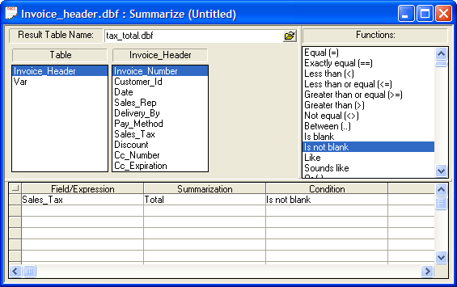
To fill in the Summarize Settings table, choose the field you want to summarize in the Field/Expression column.
Then choose the type of summary operation in the Summarization column. You can choose from a variety of summary operators including "Total", "Average", "Min", and "Max". Each row in which you choose a summary operation is used to create a field in the result table.
For example, the master table is used to keep track of sales. This table has a field called Amount which stores the amount of each sale. If you wanted to calculate the total amount of sales, choose "Amount" in the Field/Expression column and "Total" in the Summarization column.
You can also use the same field more than once. For example, assume your table contains a field called Sales_Tax. If you wanted to see both the total of sales and the average of each sale, you can choose "Sales_Tax" in the Field/Expression column on the first row and select "Total" in the Summarization column. On the second row, you choose "Sales_Tax" again and select "Average" in the Summarization column.
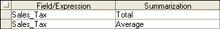
Another summary operator you can choose is "Count". This operator counts the number of records processed. If you choose "Count", it does not matter which field you selected in the Field/Expression column, since field values are not used by Alpha Five to determine the number of records it processes.
 Note : There is also
a special summary operator called "Group by". "Group by"
is used to group related master-records.
Note : There is also
a special summary operator called "Group by". "Group by"
is used to group related master-records.
Summarizing Expressions
The Field/Expression column can be used to enter an expression instead of a single field. For example, you have a table which keeps track of the inventory you have on hand. Each record contains Quantity and Cost fields for each item. If you want to calculate the total value for all items, you can summarize the expression Quantity*Cost to determine a total.
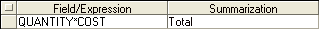
To enter an expression instead of a single field, choose "
Grouping Related Records
By default, Alpha Anywhere summarizes all of the records in the master table and places the results in a single record in the result table. You can instead choose to create multiple result records which contain summarized values of related records in the master table. This is done by using the Group by operator.
For example, you have a table in which you store the sales tax for each item sold. Each record contains the invoice number and sales tax amount, and there can be multiple records for each invoice number. To determine the sales tax for each invoice number, you can group the records by selecting "Invoice_Number" in the Field/Expression column and choosing "Group by" in the Summarization column.
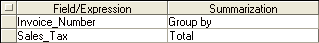
Selecting Records
Click the
 Select Records button to specify
the records to include in the summarize operation. For example, if you
have a table of customers that contains a field called COUNTRY,
and you want to include only customers from Canada, you woul d select
"Selected key/field values", and specify "Canada" as the
key.
Select Records button to specify
the records to include in the summarize operation. For example, if you
have a table of customers that contains a field called COUNTRY,
and you want to include only customers from Canada, you woul d select
"Selected key/field values", and specify "Canada" as the
key.
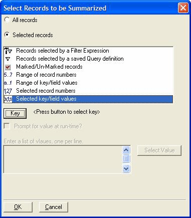
Select Records Dialog Box
Click
 to run the operation.
to run the operation.
Click Next > to continue.
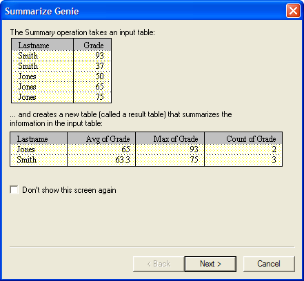
Specify the way you would like to group the records you are summarizing.
Click Next > to continue.
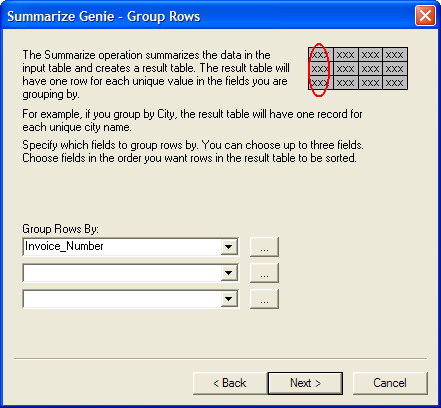
Select the fields you want to include in the result table by placing a check mark to the left of the field name in the Fields list.
For each field that you wish to summarize, select the field name and check an summary process from the Options list.
Optionally, check Count the number of records in each group.
Click Next > to continue.
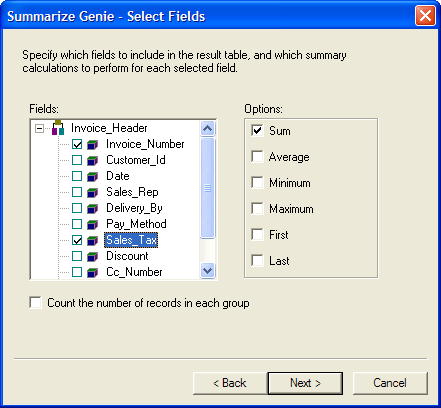
If you clicked the Selected records radio button, make a selection from the list box.
Enter the filtering (a logical expression ) and ordering (a character expression ) criteria required by your choice.
Click Next > to continue.
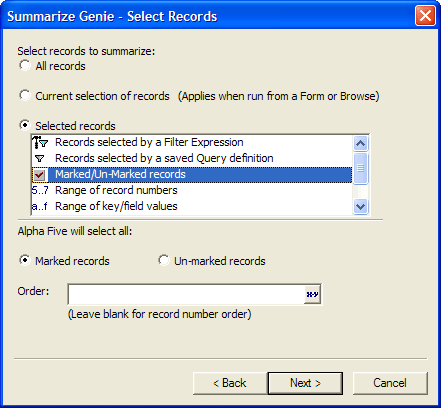
Specify the name of the result table.
Optionally, click Advanced Options if you wish to warn the user if you are about to overwrite an existing table.
Click Next > to continue.
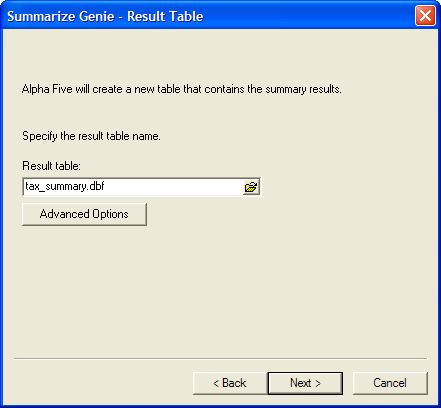
Indicate whether you want to run the operation now, save the operation and then run it, or view the settings of the Summarize Builder.
Click Finish.
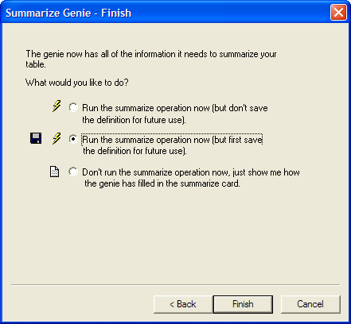
If you selected Run the Summarize Record operation now, (but first save the definition for future use), the Save summarize settings as... dialog box will appear.
Enter the name of the operation into the Name field and click OK.
If you selected Don't run the Summarize operation now, just show me how the genie has filled in the Summarize Builder, the Summarize Builder will appear.
Optionally, click Save to display the Save summarize settings as... dialog box.
Enter the name of the operation into the Name field and click OK.
Optionally, click the Run button on the toolbar to run the operation.
Changing the Field Names in the New Summary Table
Alpha Anywhere creates the field names for the summary tables by using the summary method and original field name. for example if your original field is called value and the summary operation is to total that field then the new field name will be total_value. The procedure for changing the field names in the table is as follows.
Create a new table with the same fields, but with the field names that you want.
Append the summary table to the new table.
Discard the summary table.
See Also
<TBL>.SUMMARIZE(), Overview of Batch Operations, Table Operation Methods